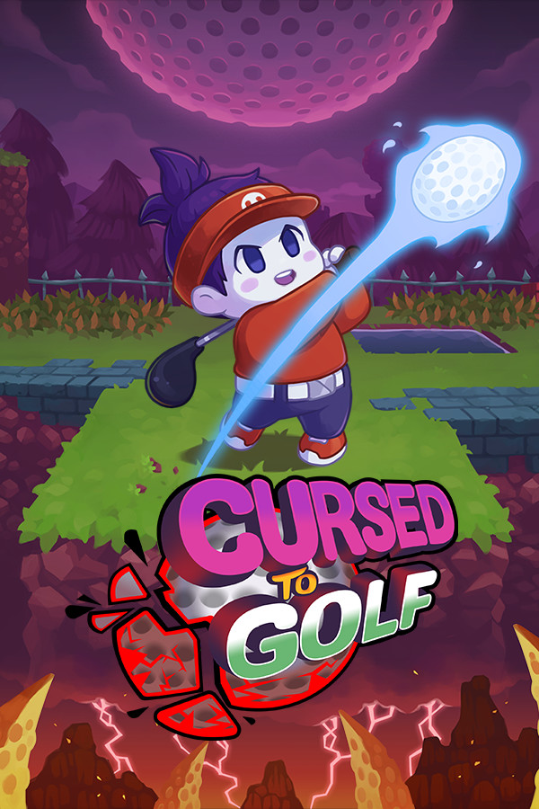

|  | |
| Playtime | Not Played |
| Last Activity | Never |
| Added | 03.11.2024 3:03:35 |
| Modified | 03.11.2024 3:06:59 |
| Completion Status | Not Played |
| Library | Gog |
| Source | GOG |
| Platform | PC (Windows) |
| Release Date | 17.08.2022 |
| Community Score | 63 |
| Critic Score | 79 |
| User Score | |
| Genre | Action Adventure Indie Sports |
| Developer | Chuhai Labs |
| Publisher | Thunderful Publishing |
| Feature | Achievements Cloud Saves Family Sharing Full Controller Support Single Player |
| Links | Itch Steam Official GOG Discord Epic Twitch |
| Tag | [HLTB] 05 to 10 hours 2D Action Adventure Arcade Colorful Cute Difficult Dungeon Crawler Funny Golf Physics Pixel Graphics Platformer Retro Roguelike Roguelite Score Attack Side-scroller Sports Turn-Based Tactics |
"The Dark Souls of side-scrolling golf roguelikes is quite the pitch, but Cursed to Golf looks like it’ll pull that premise off."
Polygon - 50 most anticipated games of 2022
"Golf in a series of platforming dungeons? As you battle to escape the underworld? (Or Golf Purgatory, which sounds just as bad.) Power-ups and weird obstacles and a never-ending series of neat gimmicks? Lovely pixelart? Cursed to Golf sounds absolutely wonderful."
Eurogamer - The games we're looking forward to in 2022
"In Cursed to Golf you take on the role of a Golf Champion, trapped in Golf Purgatory after a lightning strike stops you dead in your tracks. To ascend back to the land of the living, you’ll need to play through 18 dungeon-like holes."
Nintendo Life - 33 Indie Games We're Excited About On Switch In 2022
Graj jako Przeklęty Golfiarz, uwięziony w Golfowym Czyśćcu po śmierci w dziwnym wypadku tuż przed oddaniem zwycięskiego strzału w międzynarodowym turnieju! Legenda głosi, że grając na zdradliwych polach Golfowego Czyśćca, masz szansę wrócić do krainy żywych i, co ważniejsze, zdobyć trofeum, które wymknęło ci się z rąk. Każde pole jest zarządzane przez upiornego Legendarnego Pomocnika, który udzieli ci wskazówek na temat mistycznych technik gry w golfa, aby pomóc ci w dążeniu do odkupienia i odrodzenia.
Cursed to Golf oferuje świeże spojrzenie na podgatunki gier golfowych i roguelike. Dotrzyj do dołka w ramach limitu uderzeń albo twoja klątwa przeniesie cię z powrotem na początek pola! Aby uczynić grę jeszcze większym wyzwaniem, na polach golfowych rozmieszczono nie tylko bunkry i nierówny teren, lecz także szalone przeszkody, takie jak wiatraki o dużej mocy, kolce, skrzynki z trotylem, teleportery i wiele innych. To wszystko jest na porządku dziennym w tej zakręconej wersji klasycznej gry!
Klątwa skazująca na wieczną grę w golfa w Golfowym Czyśćcu ma też jednak swoje zalety! Użyj Widoku z Lotu Ptaszka, aby uzyskać widok na całe pole i zobaczyć, jakie czekają cię wyzwania. Kończą ci się uderzenia? Na szczęście na wszystkich dołkach rozmieszczono złote i srebrne Bożki Uderzenia, a rozbijanie ich z filmowym rozmachem uzupełni twoje uderzenia. Karty Asów przechylą szalę zwycięstwa na twoją korzyść, wykorzystując twoją moc z innego świata do manipulowania grą na niesłychane sposoby. Rozrzut, Obrót, Rakietopiłka, Zamiana to tylko niektóre z ponad 20 kart, które masz w rękawie, aby odwrócić losy gry na swoją korzyść!
Każde uderzenie ma znaczenie!